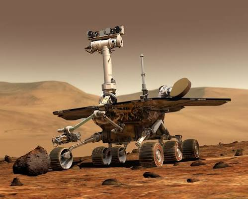
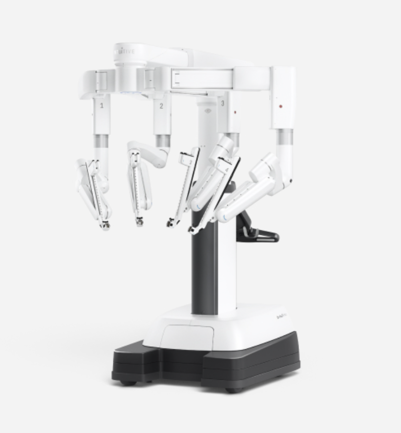
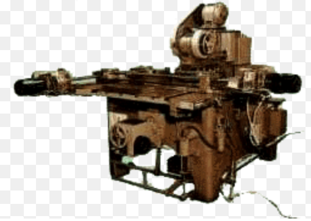
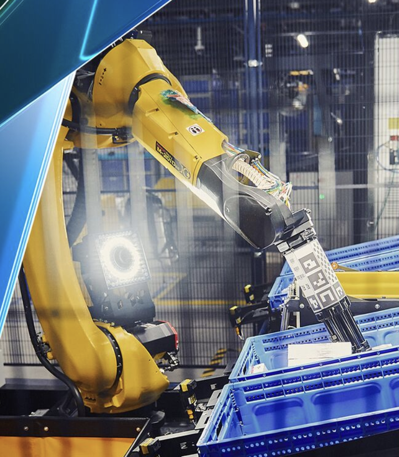
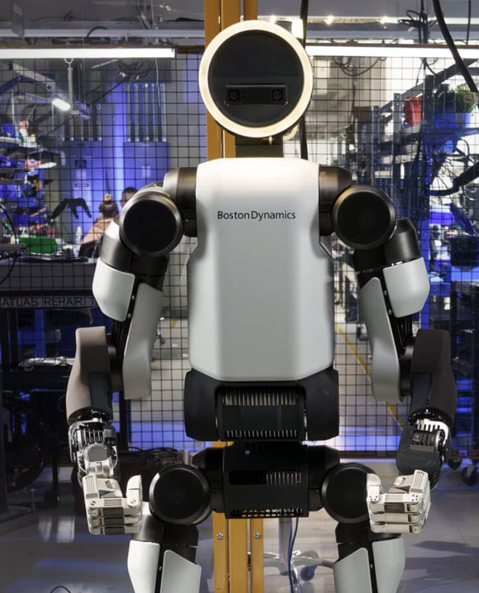
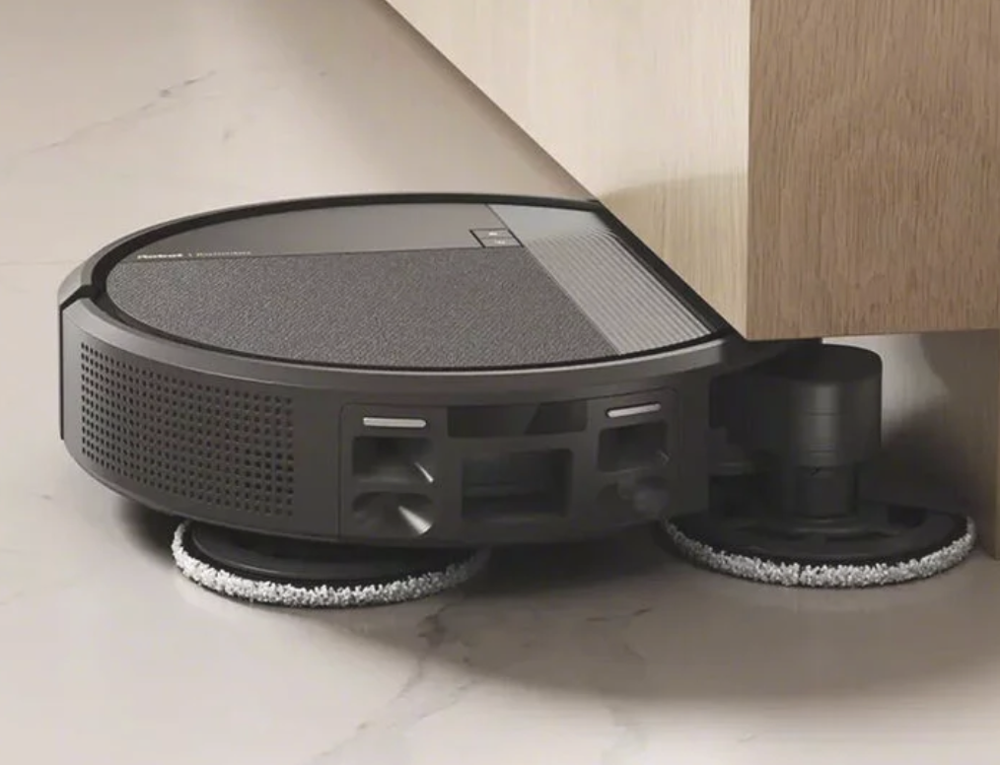

Robotics achievements
Robots have developed far beyond simple machines. Today, they can explore distant planets, assist doctors, transform factories, move goods, imitate human movement, and even help people in their homes.
The following six examples show how robotics has become an important part of science, industry and everyday life.
1. MARS robotics
One of the most remarkable achievements in robotics is the exploration of Mars. Robots can travel across the planet, collect scientific data and operate in an environment that is extremely difficult for humans.

- Developed by NASA’s Jet Propulsion Laboratory (JPL) and launched in 2020 as part of NASA’s Mars 2020 mission. Perseverance landed on Mars on February 18, 2021, in Jezero Crater.
- Perseverance is a car-sized robotic rover with a length of about 3 meters, a width of 2.7 meters, and a mass of approximately 1,025 kilograms. It has six aluminum wheels supported by a rocker-bogie suspension system, which allows it to travel over rocks, slopes, and uneven terrain while maintaining stability. Its main body protects the computers and electronic systems inside the rover. It also has a 2.1-meter-long robotic arm with a drill, scientific instruments, and cameras. The rover is equipped with multiple cameras, navigation sensors, communication antennas, computers, batteries, and a radioisotope power system. Its sample-handling system can collect rock cores, place them into special tubes, seal the tubes, and store them inside the rover.
- Perseverance was built to explore Mars and investigate whether the planet could have supported microbial life in the past. It studies the geology, minerals, rocks, and environment of Jezero Crater. One of its most important tasks is collecting and storing carefully selected rock and soil samples that could potentially be returned to Earth by a future mission. The rover also tests technologies that may support future human exploration of Mars.
2. SURGICAL robotics
Robotics has transformed modern medicine by giving surgeons greater control over very precise instruments. Robotic-assisted systems can support minimally invasive procedures and make it possible to perform complex movements through small openings in the human body.

Abstract: One of the best-known examples of surgical robotics is the da Vinci Surgical System, developed by Intuitive Surgical.
- The first generation of the da Vinci Surgical System was introduced in 1999 and was developed by Intuitive Surgical, which launched the system in 2000. The technology has since developed through several generations of robotic-assisted surgical systems.
- The system consists of three main parts: a surgeon’s console, a patient-side cart with robotic arms, and a high-performance vision system. The surgeon operates the instruments from the console using hand controls. The robotic arms hold specialized EndoWrist instruments, which can rotate and articulate with a wide range of movement. A high-resolution 3D vision system gives the surgeon a magnified view of the surgical area, while motion scaling and filtering help translate the surgeon’s movements into controlled instrument movements.
- The main purpose of the da Vinci system is to assist surgeons during minimally invasive procedures. It is not an independent robot that makes medical decisions on its own; the surgeon remains in control throughout the procedure. The system is designed to provide precise instrument control, detailed visualization, and flexible movement in areas that can be difficult to reach with conventional surgical instruments.
3. FACTORY robotics
In manufacturing, robots perform repetitive and precise tasks such as welding, painting and assembling products, helping modern factories work efficiently.

Abstract: A major example of factory robotics is the industrial robot technology developed by FANUC, one of the pioneers of factory automation.
- FANUC was established as an independent company in 1972, and its first robots were developed and installed in FANUC factories in 1974. The company has continued to develop industrial robots for manufacturing and factory automation for many decades.
- Industrial robots used in factories normally consist of a mechanical arm, multiple electric motors and joints, a controller, sensors, cables, and specialized end-of-arm tools. Different robot models can be equipped for different tasks. For example, some are designed for arc welding, while others are optimized for painting, material handling, assembly, packaging, machine tending, or high-speed picking. Modern collaborative robots can also be designed to work more closely alongside human employees.
- The main purpose of factory robotics is to automate tasks that require high precision, repetition, speed, or physical endurance. Robots can repeat the same operation consistently, move heavy objects, work for long periods, and perform tasks in environments that may be uncomfortable or demanding for people. FANUC’s industrial robots are used across industries such as automotive, electronics, food, pharmaceuticals, and general manufacturing, helping companies automate production processes and improve efficiency.
4. LOGISTICS robotics
Robots are increasingly used in warehouses and logistics centers. They can move shelves, transport packages and help organize large numbers of products.

Abstract: Amazon Robotics is a well-known example of large-scale robotic technology used in modern warehouses and fulfillment centers.
- Amazon Robotics began its current development after Amazon acquired Kiva Systems in 2012. Since then, Amazon has developed and deployed a large range of robotic systems designed to work with employees inside fulfillment centers.
- Amazon’s robotic systems include mobile robots, robotic arms, storage systems, cameras, sensors, computer-vision technology, and software for navigation and coordination. Systems such as Hercules and Titan can transport inventory and mobile shelves, while Proteus is designed as an autonomous mobile robot that can move through fulfillment-center environments. Other robotic systems, such as Cardinal and Sparrow, are designed to handle, sort, or move packages and products. Some newer systems combine mobile robots, robotic arms, storage equipment, and AI-based software into one coordinated workflow.
- The main purpose of logistics robotics is to move products and packages through warehouses more efficiently while supporting employees with physically demanding and repetitive tasks. Robots can transport inventory over long distances, bring products to workstations, help organize storage, and support package handling. Amazon has stated that these systems are intended to make work safer and more productive while also helping orders move through fulfillment centers more quickly.
5. HUMANOID robotics
Humanoid robots are designed to reproduce some aspects of human movement. Their development combines balance, movement, sensing and control.

Abstract: One of the most recognizable modern humanoid robotics projects is Atlas, developed by Boston Dynamics.
- Atlas was developed by Boston Dynamics and first introduced in 2013 through a robotics program associated with DARPA. The project originally focused on advanced humanoid mobility and has continued to develop into a modern electric humanoid robot for industrial applications.
- Atlas has a human-like structure with a torso, two arms, two legs, and a head. The current electric version is approximately 1.9 meters tall and weighs about 90 kilograms. It has 56 degrees of freedom, tactile sensing in its fingers and palm, and a 360-degree camera view. Its body contains electric motors, joints, computers, sensors, batteries, and control systems that allow the robot to coordinate movement throughout its entire body. The robot also uses a modular design to make maintenance and component replacement easier.
- Atlas was originally created to demonstrate that humanoid robots could move through environments designed for people and perform difficult physical tasks. The current project is focused on industrial applications, particularly autonomous material handling. The idea is that a human-sized robot can potentially work in existing workspaces and use equipment, tools, and areas that were originally designed for human workers.
6. HOME robotics
Robotics is no longer limited to laboratories and factories. Household robots can perform everyday tasks such as cleaning floors and maintaining gardens.

Abstract: The iRobot Roomba is one of the best-known examples of consumer robotics designed for everyday home use.
- Developed by iRobot, the first Roomba robotic vacuum was introduced in 2002. It was created as part of iRobot’s effort to bring practical robotic technology into ordinary homes and automate a common household task.
- Roomba is built around a compact mobile body containing motors, wheels, brushes, a suction system, sensors, a battery, electronic control systems, and navigation technology. Its cleaning system uses rotating brushes and suction to collect dust and debris from different floor surfaces. Sensors help the robot detect walls, obstacles, and changes in its surroundings, while navigation technology allows it to move around a room and cover the floor without requiring constant human control. Later generations have added more advanced mapping, navigation, and smart-home features.
- The main purpose of Roomba is to reduce the amount of time people need to spend cleaning floors. The robot can travel around a home, collect dirt and dust, and return to charging or continue cleaning according to its programmed functions. The project is significant because it helped demonstrate that robotics could become a practical part of everyday life rather than being limited to research laboratories, factories, or highly specialized environments.